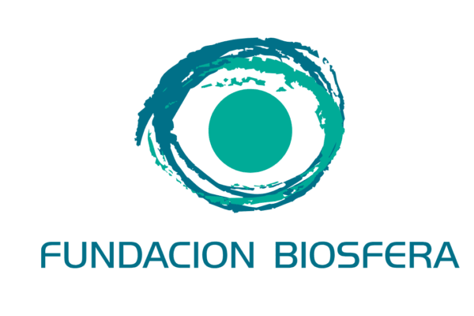

Je suis le coordonnateur du centre d'aide en informatique de l'Université de Sherbrooke et j'accompagne l'équipe des tuteurs et veille à ce que chaque étudiant reçoive le soutien dont il a besoin.

Étudiant en informatique passionné par l'innovation et les nouvelles technologies, je conçois des solutions numériques modernes pour transformer les idées en projets concrets. Curieux, créatif et motivé, j'aime relever de nouveaux défis et apprendre continuellement.
Mon rôle de coordonnateur à l'Université de Sherbrooke.
Je suis le coordonnateur du centre d'aide en informatique de l'Université de Sherbrooke et j'accompagne l'équipe des tuteurs et veille à ce que chaque étudiant reçoive le soutien dont il a besoin.
Mes études, stages et engagements.
En cours
Université de Sherbrooke, Québec
Spécialisation en développement web. Cours principaux : programmation orientée objet, structures de données et algorithmes, bases de données.
Mai — Août 2026
Strateginc Groupe Financier, Saint-Bruno-de-Montarville
Automatisation des processus métier de l'entreprise via l'écosystème Microsoft. Analyse des flux existants, conception de solutions d'automatisation et amélioration de l'efficacité opérationnelle.
Janv. — Avr. 2026 · Sept. — Déc. 2026
Centre d'entraide à l'étude en informatique · Université de Sherbrooke
Accompagnement d'étudiants en programmation et concepts informatiques. Première session de janvier à avril 2026 (formation institutionnelle et attestation), puis reprise du poste de septembre à décembre 2026.

Sept. — Déc. 2025
Fundación Biosfera
Amélioration de l'expérience utilisateur (UX) du site web : audit de l'interface, analyse des parcours utilisateurs et recommandations concrètes pour moderniser le site et faciliter les collaborations internationales.
Quelques réalisations qui illustrent ce que je sais faire.
Projet phare — une application concrète pour les candidatures de stage.

Plateforme web destinée aux étudiants pour optimiser leurs candidatures de stage. Elle permet d'analyser et d'adapter un CV selon une offre, de générer des lettres de motivation ciblées, et de suivre les indicateurs clés (score ATS, taux de correspondance).
Outils et savoir-faire que j'utilise au quotidien.
Badges vérifiables que j'ai obtenus en formation.

Cisco Networking Academy
Vérifier le badgeUne question, un projet ou une opportunité ? Écrivez-moi — je vous réponds dès que possible.
chav1301@usherbrooke.ca